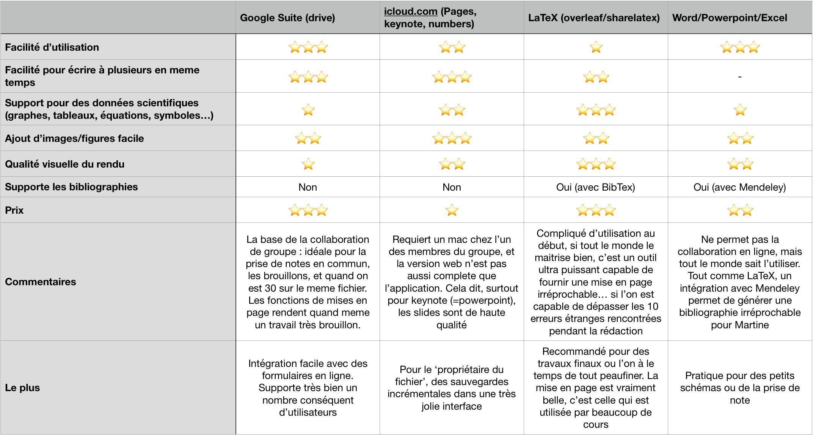

Vos etudes
Les travaux de groupe
Le gros sujet, surtout au début avec le projet Charpak, et au S2&S3, l'APP (Apprentissage par projets)
Comment ne pas se taper dessus ?
Je commence par la, car c'est la question qui va vous être indispensable! Première chose, je ne pense pas qu'il soit vraiment possible de finir un APP, ou un projet Charpak, sans avoir des périodes de désaccord. Le principal est de savoir les gérer. Pour cela, quelques astuces :
- Rappelez-vous que vous avez tous un objectif commun : faire avancer le projet de la meilleure façon possible.
- Si votre désaccord concerne quelque chose de plutôt matériel, je pense que l'idéal est de prendre deux minutes pour que chacun résume, à l'écrit, les avantages et inconvénients de sa méthode préférée. Après ça, comparez entre vous et décidez objectivement du meilleur point de vue à adopter.
- Si le désaccord existe toujours, allez voir une personne ou deux extérieures au groupe pour trancher.
- Toute engeulade doit restée confinée dans le cadre du projet, si vous n’êtes pas en projet, pas de raisons de s'énerver entre vous.
- N'hésitez pas à faire appel à vos enseignants pour régler des désaccords techniques
Comment être le plus productif possible ?
Quelques règles et astuces :
- Si le projet dure quelques jours ou plus, il peut être vraiment cool d'avoir un moyen simple de communiquer entre vous : SMS groupés, Discord, Messenger, Slack, Skype,... Ce ne sont pas les logiciels qui manquent, mais ils vous permettent tous de garder une trace des choses qui se sont dites, et ainsi d'éviter de vous répéter.
- Si possible, une personne qui se charge de gérer les échelons, les objectifs et la progression (ça prends pas longtemps) et de rappeler gentiment aux autres les choses à faire, ca permet vraiment de s’apercevoir tôt des étapes loupées ou bâclées, pour y revenir plus tard.
- Si vous parlez à quelqu'un d’extérieur au groupe (Notamment après un diapo), un bout de papier, un stylo et prenez des notes!
- La ponctualité de tous les membres du groupe est indispensable. Un petit rappel des horaires dans le chat de groupe ("N'oubliez pas demain, RDV a 8h45 en C3, venez tous avec l'introduction de votre partie et les points essentiels à ajouter au diapo") ne fera jamais de mal (CF gérer les échelons)
Quels outils utiliser lors d'un travail en groupe ?
- Utilisez des outils du style Trello pour que chacun voit ce qui lui reste à faire, et garder un œil sur les deadlines
- Comme mentionné précédemment, je recommande vraiment Discord pour causer entre vous!
- Au sujet de l'édition collaborative, voici un tableau qui récapitule les choix disponibles, à vous de choisir ce qui vous semble le plus approprié

Autre chose ?
Le sujet qui fâche : les emplois du temps. Il n'est pas impossible (ça c'est déjà vu, tousse, tousse) que les crénaux inscrits à l'emploi du temps ne soient pas respectés : si vous n'avez pas de chance et que vous etes le dernier groupe à passer sur un oral important (APP, je pense à toi), que la fin du créneau est à 16h, comptez pas partir avant 18-20h :/
Je sais, çà fait mal.
La ponctualité ?
Soyez ponctuels. Rien de spécial à dire la dessus, mais si Martine dit Lundi 23h59, Martine sera devant ses mails à cette heure là (Martine ne dors jamais)
Les logiciels indispensables
Voir aussi au dessus pour "Quels outils utiliser lors d'un travail en groupe ?"
Comment gérer une bibliographie ?
- Pour trouver des articles scientifiques : Google Scholar
- Pour avoir accès (facilement) au PDF des articles (sans payer, oui c'est illégal mais tout le monde le fait) : Sci-Hub (lien direct : https://whereisscihub.now.sh/go) ou arXiv, accessible depuis Scholar
- Et pour les livres et autres cours LibGen
- Balancez tous vos PDFs dans Mendeley et laissez le vous générer la bibliographie
N'oubliez pas, vérifiez la crédibilité de vos articles avant de citer!
Pour info, dans un document LaTeX, la config que j'utilisais était
\usepackage[style=authoryear-ibid, doi=false, isbn=false, url=false]{biblatex} % Bibliographie
\addbibresource{citations.bib}
% [...]
Texte avec citation : \parencite{Yang2015}
% [...]
\printbibliography
Gérer ses cours ?
Pensez à utilisez une application pour lire vos mails (surtout histoire d'avoir la notif pour les changements tardifs et les explications) : vos mails Zimbra peuvent êtres transférés vers gmail
Utilisez un bon réveil (je recommande celui-ci (Android)) et placez vos emplois du temps sur Google Agenda
J'aime bien aussi avoir la liste des devoirs dans un Trello personnel, en plusieurs colonnes :
- Interros
- Devoirs à faire
- En cours
- Fait
- Rendu
- Archives/Passé/Noté
Dans le meilleur des mondes, vous n'en aurez pas besoin, mais les MCC (voir sur dokéos) peuvent vous aidez pour savoir ou vous en êtes.
De loin le plus important, ce site la pour se moquer un peu de l'équipe enseignante, ça fait du bien de temps en temps.
Les sites officiels (de l'université) ?
Pour les devoirs
- Wolfram|Alpha vous permet de calculer des formules compliquées et vous donne parfois des solutions étapes par étapes.
- Un bon correcteur (payant, mais je suis sur que quelqu'un pourra trouver une version... gratuite ;) ) serait Antidote, sinon utilisez Grammarly (anglais) ou Bon Patron (français)
Pour les gens qui prennent des notes sur leur ordi
J'en fait partir, et je dois avouer que j'adore vraiment pouvoir retrouver mes documents facilement (je perds tout ce qui est papier). Malgré tout, si je peux conseiller quelques trucs :
Au moins au début, créez vous une session séparée sur votre ordi ou vous n'etes pas connecté à vos sites distracteurs préférés (Facebook, Discord, Messenger, Gmail, ...) : beaucoup moins de risques de divaguer
Si l'envie vous tente, utilisez Markdown pour prendre des notes : c'est un moyen simple de prendre des notes (voir ici pour la référence rapide)
A moins que vous soyez très bon en LaTeX, oubliez la prise de notes sur ordi en maths
A la fin de toute prise de notes
Je répéte les conseils de Jeanne et Martine (et Sébastien Martinez) :
Prenez 5 minutes pour résumer en deux-trois phrases le contenu du cours et, si possible, faites un dessin/mindmap/flowchart du cours plus tard dans la journée.
Ou pas, parce que certains n'aiment vraiment pas la méthode, et trouvent qu'il s'agit d'une perte de temps. A vous de voir, vous êtes grands.
Les travaux à rendre
Des conseils ?
- Prenez de l'avance
- Relisez (tous ensemble si groupe) l'intégralité du devoir avant de l'envoyer (comptez jusqu'a 4 heures dans le cas d'un rapport d'APP, je dis ca je dis rien)
- La formule des retards (un tiers des points en moins par jour de retard) existe, mais je ne l'ai jamais vu être respectée par les profs (mais il y a bien un malus par contre!)
- Ne vous compliquez pas la vie plus que ça sur le design
- Les fautes d'orthographe coûtent cher dans un devoir.
- N'hésitez pas à travailler ensemble dans une salle à l'institut
- Vérifiez sur les vidéo-projecteurs que vos dispos s'affichent bien (les couleurs sont souvent beaucoup plus mauvaises vues du bout de la salle, avec le beau contre jour)
- N'hésitez pas à (ab)user des schémas pour faciliter la compréhension
- Pensez à demander de l'aide à vos collègues ou aux promos précédentes si vous ne comprenez pas quelque chose
Comment se relire ?
C'est plutôt simple au final : sur un projecteur, à l'institut, vérifiez que
- Tout s'affiche bien (mise en page, couleurs)
- On ne voit pas de fautes d'orthographe
- Chaque affirmation contient une source
- Chaque figure dispose d'une légende (et d'une source, si applicable)
- Le contenu suit un fil logique, facile à comprendre
Dans le cadre d'un diapo, je recommande solidement le cours de L2 sur les slides (Marc Chauvet) (Je suis sympa, voici un lien vers les slides ici)
L'email à envoyer, je mets quoi ?
On envoie l'email à la/les personnes principales (celles qui vont évaluer), et on mets en copie les membres de son groupe.
On oublie pas la piece jointe, que l'on nome ainsi (comme le sujet) [N° GROUPE]-[Date]-[Type] - [sujet].ext (Par exemple 4-231018-Diapo - APP_Les vacances.pdf)
On envoie si possible un PDF en plus du document éditable
Si les pièces jointes sont trop lourdes, utilisez WeTransfer ou le service d'u-psud
On oublie pas de remercier, et on envoie une bonne poignée de minutes avant, afin d’être sur que ca part sans problèmes (vérifiez que vous ne recevez pas de réponses du serveur de mail disant que l'adresse du destinataire est fausse)
Le projet charpak
C'est quoi ?
Je dirais rien!
Comment bien choisir son sujet ?
Rien de rien!
... Sérieusement ? :(
Si tu as vraiment une question, n'hésite pas à passer voir les L2/L3, on mords pas
On dit rien parce que c'est plus sympa de découvrir petit à petit comment ça se passe à Charpak
A l'institut
J'ai un problème, qui je vais voir ?
- Organisation : Martine
- Matériel : Sabrina/Marie-Ange
- Relationnel : Martine
- Compréhension : Tes potes, des L2/L3, le prof
- Personnel : Catherine
- Avec mon ordi : Cécile, Sabrina, Moi (Arthur), ou le responsable de promo si il existe
- Avec le décompte des heures de Jazz : Sabrina
- En bio :
Nardjis, le prof
- En chimie : RIP (sinon les anciens STL de ta classe, ils sont bons en bio et chimie)
- En ingé : Les anciens STI2D/S-SI
- En physique : Rien à faire :(
Comment imprimer quelque chose ?
Après avoir préparé une clé USB avec le PDF que tu veux imprimer :
- Méthode 1 : Aller voir Sabrina et lui demander gentiment, mais c'est vraiment pas sur que ca marche.
- Méthode 2 : Aller trouver une feuille blanche (L'institut n'en donne plus, il te faudra une ramette de feuilles dans le casier, sinon il va falloir aller gratter chez les autres), brancher ta clé USB ou ton ordi à l'imprimante vers le fond de l'institut (Après la INFO3)
- Méthode 3 : Direction BU
La bibliothèque universitaire ?
Je m'en suis jamais servi, mais ça peut être pratique pour les recherches bibliographiques ou pour travailler dans le calme
Les prénoms super utiles
- Jeanne : Prof de maths
- Jean : Prof de maths
- Tony : Prof de maths/info
- Joel : Ancien prof de maths
- Cyril : Prof de Physique
- Nardjis : Ancienne prof de bio
- Martine : Prof de bio, responsable des L1
- Cécile : Responsable des L2/L3, gestion des profs et emplois du temps (fait aussi un cours de traitement de l'eau)
- Sabrina : À l'administration : La sauveuse de l'Humanité!
- Marie-Ange : Aide Sabrina (et la remplace pendant son congé maternité)
- Bénédicte : Directrice de l'institut
- Franck : Directeur des formations
Et bien sur : Les deux stagiaires polytechniciens et vos tuteurs